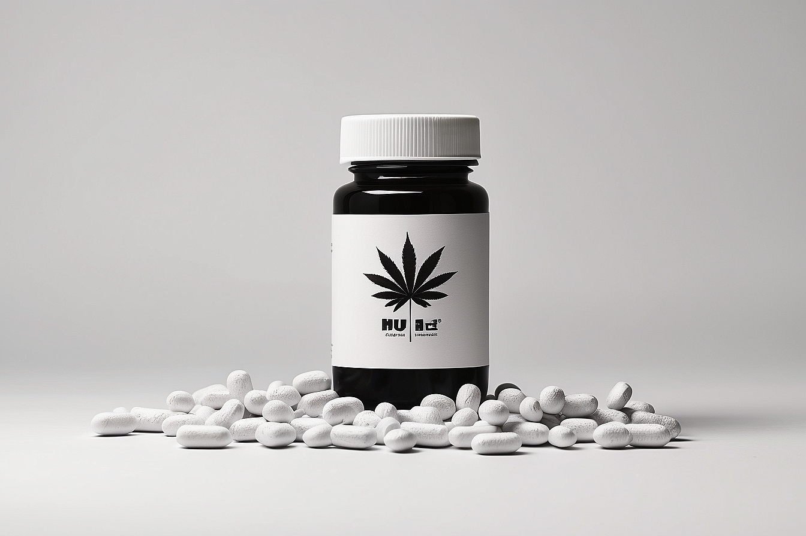

In the dim corridors of despair, where the shadows of addiction loomed large, a spark of resilience ignited
the foundation of our anti-drug organization. Born out of a collective concern for the well-being of
individuals entangled in the web of substance abuse, our journey began with a shared determination to bring
about positive change.

The organization's genesis traces back to 1975, a pivotal moment when a group of passionate individuals,
ranging from healthcare professionals to community activists, came together to address the burgeoning crisis
of drug addiction in our society. Witnessing the devastating impact of substance abuse on families,
communities, and individual lives, these visionaries set out on a mission to create a haven of support,
awareness, and recovery.
In the early days, our fledgling organization faced numerous challenges. From navigating bureaucratic
hurdles to rallying community support, the road was arduous. However, fueled by a common purpose, the
founders tirelessly advocated for the establishment of rehabilitation centers, educational programs, and
outreach initiatives.
Through persistent efforts, our organization secured partnerships with local authorities, healthcare
providers, and educational institutions. These collaborations became the cornerstone of our multifaceted
approach to combating drug abuse. We launched awareness campaigns in schools, conducted seminars for
parents, and established helplines to provide a lifeline for those grappling with addiction.
As the organization grew, so did its impact. Lives were transformed, and stories of recovery became beacons
of hope. Our journey was marked by triumphs, setbacks, and, most importantly, the unwavering commitment to
our cause. We celebrated the opening of counseling centers, the expansion of support groups, and the gradual
shift in societal attitudes toward addiction.
Looking back, our history is a testament to the power of collective action. It's a narrative of resilience,
compassion, and the belief that change is possible, even in the face of seemingly insurmountable challenges.
Today, our anti-drug organization stands as a symbol of hope, an embodiment of the transformative effect
that dedicated individuals can have on their communities.
In the years that followed our inception, we have learned, adapted, and evolved. Our journey continues as we
strive to break the chains of addiction, dispel the stigma surrounding mental health, and create a future
where every individual has the opportunity for a healthy, drug-free life.
As we reflect on our history, we acknowledge the immense support from volunteers, donors, and advocates who
have been integral to our success. Together, we remain steadfast in our commitment to building a world where
the shadows of addiction retreat in the face of a brighter, healthier tomorrow.
In the heart of our anti-drug organization lies a resolute commitment to forging a path towards a future
free
from the shackles of substance abuse. Our purpose is rooted in a deep-seated belief that every individual
deserves the chance to lead a life unencumbered by the devastating effects of addiction.
Statement:
Our mission is clear: to cultivate a society where the stigma surrounding drug addiction is dismantled, and
individuals are empowered to seek help without fear or judgment. We are advocates for change, striving to
create
an environment that fosters compassion, understanding, and accessible resources for those affected by
substance
abuse.
Objectives:
-
Raise Awareness:
We aim to illuminate the shadows cast by drug addiction through comprehensive awareness campaigns.
By
educating
communities, schools, and families, we endeavor to dispel myths, challenge stereotypes, and
encourage
open
conversations about the realities of substance abuse.
-
Prevention Through Education:
Knowledge is a powerful tool in the prevention of drug abuse. Our organization is dedicated to
implementing
educational programs in schools, colleges, and community centers. By equipping individuals with
information
on
the risks and consequences of substance abuse, we strive to build a resilient generation that makes
informed
choices.
-
Support and Rehabilitation:
Central to our mission is the establishment and maintenance of support systems for individuals
navigating
the
challenging journey of recovery. We collaborate with healthcare professionals, rehabilitation
centers,
and
support groups to provide comprehensive assistance, including counseling, treatment options, and
aftercare
programs.
-
Community Empowerment:
We believe in the strength of communities to effect positive change. Through partnerships with local
organizations, businesses, and government entities, we work to create a network of support that
addresses
the
root causes of drug addiction and promotes community resilience.
-
Advocacy for Policy Change:
Our organization actively engages in advocacy efforts to influence policy changes at local and
national
levels.
We seek to champion policies that prioritize addiction as a public health issue, advocating for
increased
access
to treatment, prevention programs, and the eradication of punitive measures that hinder
rehabilitation.
-
Research and Innovation:
To stay at the forefront of effective strategies, our organization invests in research initiatives
and
innovative approaches to addiction prevention and treatment. We collaborate with experts in the
field to
identify best practices, promote evidence-based interventions, and contribute to the evolving
landscape
of
addiction science.
-
Destigmatization of Mental Health:
Recognizing the interconnected nature of mental health and substance abuse, we actively work to
destigmatize
seeking help for mental health concerns. By fostering an environment of understanding and empathy,
we
aim to
break down barriers that often prevent individuals from seeking the support they need.
As we pursue these objectives, we remain guided by the principle that each action, no matter how small,
contributes to the larger tapestry of change. Together with our dedicated volunteers, partners, and
advocates,
we aspire to be the guiding light that leads individuals out of the darkness of addiction towards a future
filled with hope, recovery, and the promise of a drug-free life.